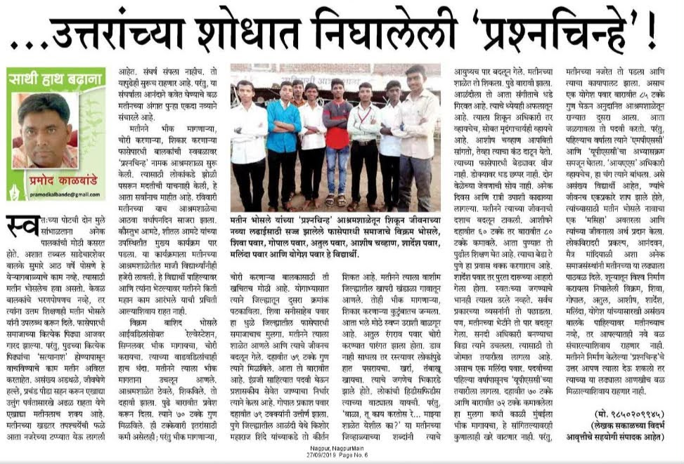
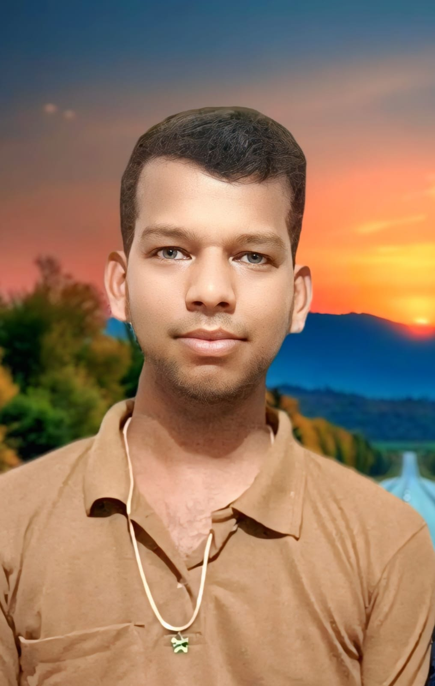
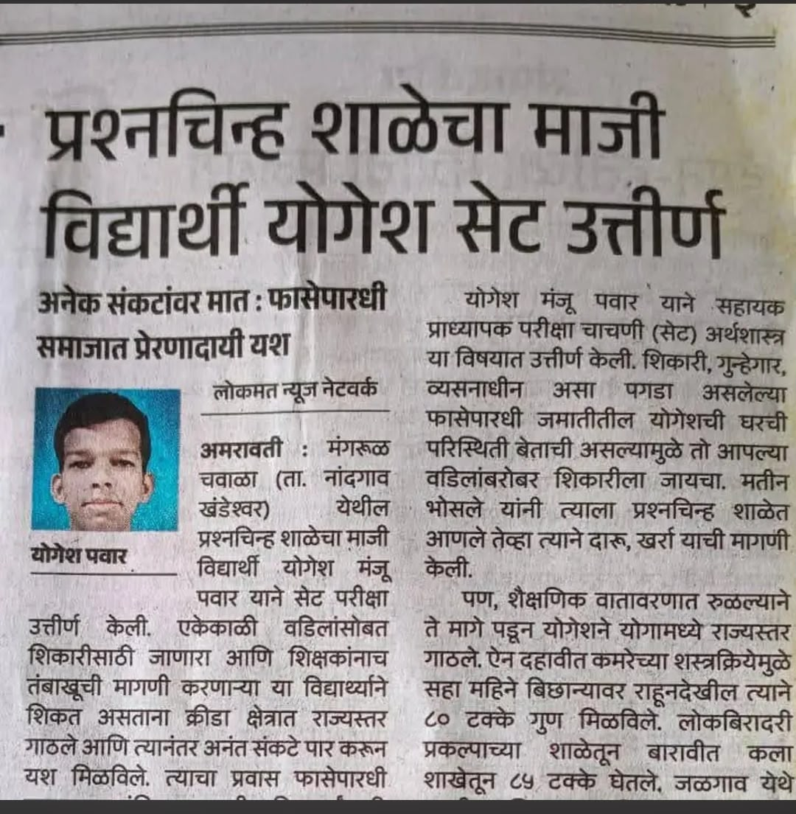
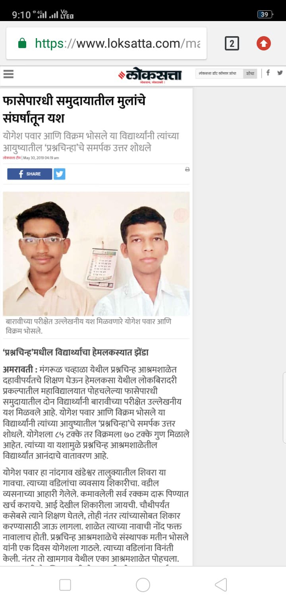

लोकशाही मराठी न्यूज
फासेपारधी समाजातील मुलांचे संघर्षातून यश
योगेश पवार यांच्या प्रेरणादायी शैक्षणिक प्रवासाची आणि संघर्षातून घडलेल्या यशाची बातमी.
प्रश्नचिन्ह आदिवासी आश्रमशाळेपासून सुरू झालेला शिक्षणाचा प्रवास, राज्यस्तरीय योगासनातील यश, संकटांवर मात करत मिळवलेले शैक्षणिक यश आणि आज अर्थशास्त्र विषयाचे सहाय्यक प्राध्यापक म्हणून सुरू असलेली वाटचाल.

माझ्या जीवनप्रवासात प्रश्नचिन्ह आदिवासी आश्रमशाळा हा केवळ शिक्षणाचा टप्पा नव्हता.मतीन शंकरराव भोसले सरांनी माझ्यातील क्षमता ओळखून मला शिक्षणाच्या प्रवाहात आणले आणि माझ्या आयुष्याला नवी दिशा दिली.
संघर्षातून शिक्षणाकडे आणि शिक्षणातून यशाकडे झालेला प्रवास.
माझ्या जीवनप्रवासातील एक अत्यंत महत्त्वाचा टप्पा म्हणजे प्रश्नचिन्ह आदिवासी आश्रमशाळेत झालेले माझे शिक्षण. माझ्यासारख्या फासेपारधी समाजातील मुलासाठी ही शाळा केवळ शिक्षण घेण्याचे ठिकाण नव्हते, तर माझ्या आयुष्याला नवी दिशा देणारे एक महत्त्वाचे केंद्र होते.
मी आठवीमध्ये प्रश्नचिन्ह आदिवासी आश्रमशाळेत प्रवेश घेतला. त्या काळात माझी कौटुंबिक आणि सामाजिक परिस्थिती अत्यंत प्रतिकूल होती. घरची आर्थिक परिस्थिती हलाखीची होती. वडिलांसोबत शिकारीला जाणे आणि कुटुंबाच्या उदरनिर्वाहासाठी संघर्ष करणे हा माझ्या बालपणाचा भाग होता.
माझ्या आयुष्यातील हा बदल घडवून आणण्यात प्रा. मतीन शंकरराव भोसले सरांची भूमिका अत्यंत महत्त्वाची होती. फासेपारधी समाजातील मुलांच्या परिस्थितीची त्यांना जाणीव होती. या मुलांमध्ये क्षमता आहे; फक्त त्यांना शिक्षण, योग्य वातावरण आणि संधी मिळणे आवश्यक आहे, असा त्यांचा ठाम विश्वास होता.
मतीन सरांनी मला प्रश्नचिन्ह आश्रमशाळेत आणले आणि शिक्षणाच्या वातावरणात आणून उभे केले. शाळेतील शैक्षणिक वातावरण, शिक्षकांचे मार्गदर्शन आणि मिळालेली शिस्त यामुळे माझ्यात हळूहळू सकारात्मक बदल घडू लागला.
प्रश्नचिन्ह शाळेच्या वातावरणात आल्यानंतर माझी योगासनातील आवड जोपासली गेली. योग्य प्रशिक्षण आणि शैक्षणिक वातावरण मिळाल्यामुळे मी क्रीडा क्षेत्रात पुढे जात राहिलो आणि योगासनामध्ये राज्यस्तरापर्यंत पोहोचलो.
दहावीच्या काळात माझ्या कमरेचा गंभीर त्रास वाढला. कमरेच्या शस्त्रक्रियेमुळे मला सुमारे सहा महिने बिछान्यावर राहावे लागले. शरीर साथ देत नसतानाही मी शिक्षण सोडले नाही. बिछान्यावर राहून अभ्यास केला आणि दहावीच्या परीक्षेत ८० टक्के गुण मिळवून यश संपादन केले.
प्रश्नचिन्ह आश्रमशाळेतील शिक्षणानंतर माझ्या पुढील शिक्षणाचा मार्गही मतीन सरांच्या मार्गदर्शनामुळे खुला झाला. अकरावीच्या शिक्षणासाठी मला लोकबिरादरी प्रकल्प, हेमलकसा येथे प्रवेश मिळाला.
लोकबिरादरी प्रकल्पातील शिक्षण, आमटे परिवाराचे प्रेम आणि शिक्षकांचे मार्गदर्शन यामुळे माझ्या व्यक्तिमत्त्वाला नवी दिशा मिळाली. बारावीच्या परीक्षेत मला ८५ टक्के गुण मिळाले.
आज मी अर्थशास्त्र विषयाचे सहाय्यक प्राध्यापक म्हणून कार्यरत आहे. मागे वळून पाहताना मला जाणवते की, माझ्या जीवनात प्रश्नचिन्ह आदिवासी आश्रमशाळेचा टप्पा आला नसता, तर कदाचित माझ्या आयुष्याची दिशा वेगळी असती.
योगेश पवार यांच्या संघर्ष, शिक्षण आणि यशाची दखल घेणाऱ्या तीन महत्त्वाच्या बातम्या.

योगेश पवार यांच्या प्रेरणादायी शैक्षणिक प्रवासाची आणि संघर्षातून घडलेल्या यशाची बातमी.

योगेश पवार यांच्या संघर्षातून शिक्षण आणि यशाकडे झालेल्या प्रवासाची प्रेरणादायी बातमी.

प्रश्नचिन्ह आदिवासी आश्रमशाळा आणि मतीन भोसले सरांच्या मार्गदर्शनातून घडलेली योगेश पवार यांची प्रेरणादायी वाटचाल.
योगेश पवार यांची ही वाटचाल प्रश्नचिन्ह आदिवासी आश्रमशाळेने दिलेल्या संधीची आणि प्रा. मतीन शंकरराव भोसले सरांनी ठेवलेल्या विश्वासाची प्रेरणादायी कहाणी आहे.
← AFPSS मुख्यपृष्ठ